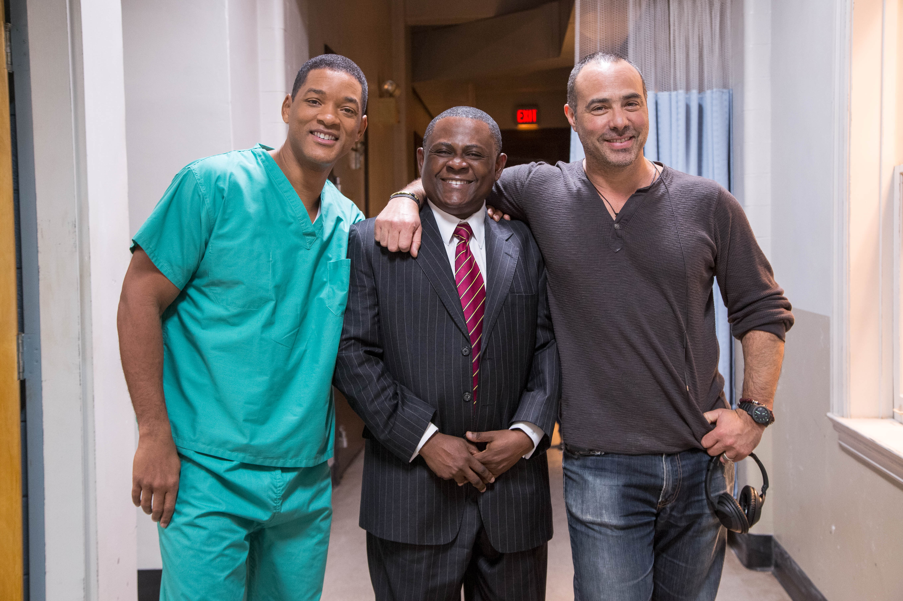
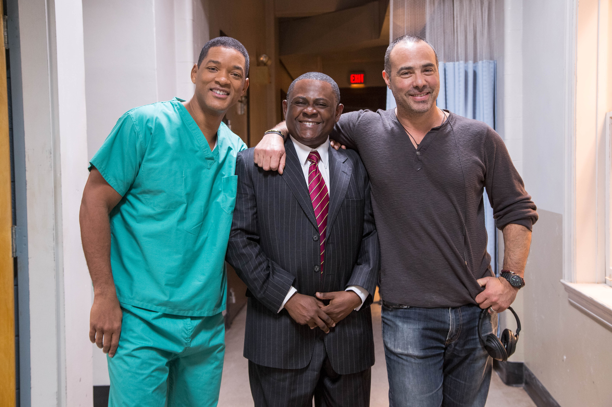

dsyjgds dsisduy gs 7styusdyygsd
SynopsisWhile conducting an autopsy on former NFL football player Mike Webster (David Morse), forensic pathologist Dr. Bennet Omalu (Will Smith) discovers neurological deterioration that is similar to Alzheimer's disease. Omalu names the disorder chronic traumatic encephalopathy and publishes his findings in a medical journal. As other athletes face the same diagnosis, the crusading doctor embarks on a mission to raise public awareness about the dangers of football-related head trauma.